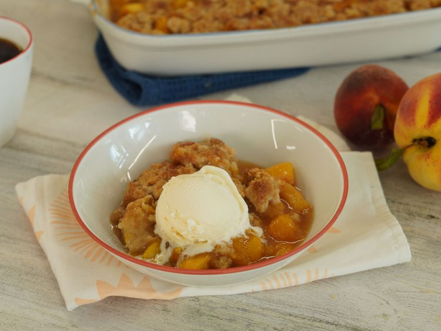

Peach Cobbler

A Delictions Desert:
How to make a simple but elegant peach cobbler that all families will enjoy
Ingredients:
- 8 fresh peaches- peeled, pitted and sliced into thin wedges
- ¼ cup white sugar
- ¼ cup brown sugar
- ¼ teaspoon ground cinnamon
- 1 teaspoon fresh lemon juice
- 2 teaspoons cornstarch
- 1 cup all-purpose flour
- ¼ cup white sugar
- ¼ cup brown sugar
- 1 teaspoon baking powder
- ½ teaspoon salt
- 6 tablespoons unsalted butter, chilled and cut into small pieces
- ¼ cup boiling water
- 3 tablespoons white sugar
- 1 teaspoon ground cinnamon
Directions:
- Cook your rice according to the bag.
- While rice is cooking cut up the two Thai chilies and place in bowl.
- Then scoop the rice in the bowl with the Thai chilies.
- Then add the soy sauce to the bowl, however much you want.
- Then add Kinder's Cooking Sauce and Glaze to the bowl.
- Then add some weird thing with lemon, and lime that's brown.
- Grab a fork and enjoy.
Links:
Home